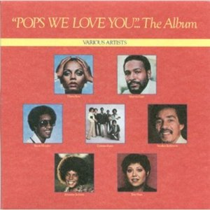

Video
Pops, We Love You (A Tribute to Father)" is a recording released as a single tribute in 1978 to Berry Gordy jr's father of founder the Motown. who died of cancer that same year. Berry Gordy, Sr. was known as "Pops" and he helped his son supervise the Motown label in the generation of hits and guide numerous artists such as Marvin Gaye, Diana Ross, Smokey Robinson or Stevie Wonder. When he passed away in October 1978, his son Berry Gordy, Jr. sent Motown songwriters Marilyn McLeod and Pam Sawyer to compose a song honoring his father and also began producing a full album with other artists. . From there this song emerged as the main theme in which the previously mentioned artists participated. Diana Ross, Marvin Gaye, and Smokey Robinson recorded the track together at Motown Studios in Los Angeles, and Stevie Wonder - who was in the process of recording his "Journey Through the Secret Life of Plants" - incorporated his voice later.

Lyrics
Anyone who's had the pleasure
Of meeting you in this lifetime
Would recognize the strength in you
The sense in you
And the wisdom like sun shining through
Pops, we love you, love you
Yes, we do
Pops, Pops, we love you, love you
Yes, yes, we do
Oh anyone, young and old alike
Would feel free to ask your advice
And you'd know, you`d understand
And you'd give a helping hand
All your life you fought for whats right, whats right
Pops, Pops, we love you, love you
Yes, we do
Pops, we love you, love you
Yes, we do
You always say
First love the Lord
And then it's easy to love thy neighbour
Sing it Smokey
And from what we`ve heard
You`ve always been a man of your word
Pops, we love you, love you
Yes, we do
Like the roots of the strongest tree
You give strength to your friends and family
And anyone who`s had the luck
To meet you
When they're down you can pick them right up
Pops, we love you, love you
Yes, we do
Pops, we love you, love you
Everybody loves ya
Yes, we do
Getting older
And you're still going strong, I know, I know
You know what Pops
When I heard this song
I immediately thought about you
We love you Pops
This song says everything we ever wanted to say to you
And even more
I want you to believe it
I want you to know it
Especially in times when maybe we forgot to show it to you
Pops we love you, we really do
You're so good, you're so kind, you're so real, you're so fine
Pops, we love you, love you
What a wonderful man it is
Yes, we do
Pops, we love you, love you
Yes, we do
All the little children love you
You`ve been wonderful
Pops, we love you
Pops, your name should have been love
Thats what you stand for in our lives